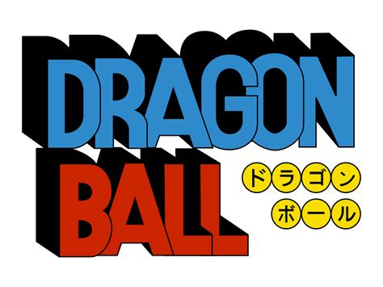
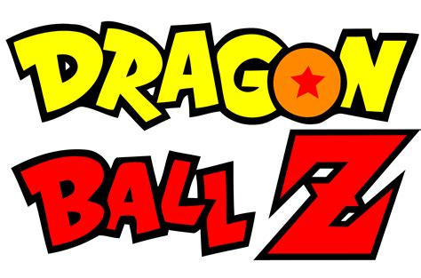
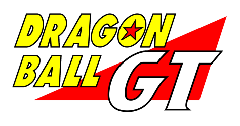

Dragon Ball
-
Oolong desejou uma calcinha da Bulma.
- Goku desejou que Bura, o o indioque foi morto por Tao Pai Pai revivesse.
- Piccolo Daimaoh desejou voltar a ter seu poder total.
- kuririn, mestre Kame Chaoz são rvividos depois da luta contra Piccolo Daimaoh.

- Goku é revivido para lutar contra os sayajins.
- Dende desejou que Piccolo voltasse a vida.
- Dende desejou que Piccolo fosse para Namekusei.
- Popo desejou que todos as pessoas mortas por Freeza voltassem a vida.
- Dende deseja que todos que estavam em Namekusei, menos Goku e Freeza voltassem pra Terra.
- Tenshinhan, Chaoz, Yamcha e Kuririn são revividos.
- Um novo planetas para os Namekusei-jins.
- Goku deseja que todos os mortos por Cell ressusitem, antes do jogo de cell.
- Truks é revivido depois da luta com Cell.
- Kuririn deseja que a #18 se torne humana e que a bomba que ela possuia em seu corpo fosse retirada.
- É desejado que a terra voltasse a existir e reviver os mortos depois da luta contra Boo.

Dragon Ball GT
- Pilaf deseja, sem querer que Goku virasse criança de novo.
- Bebi deseja que o planeta Plant volte a existir.
- É desejado que a terra seja restaurada depois da saga Bebi.
- É desejado que todos os mortos pelos dragões, Kuririn e #18 sejam
revividos, depois da saga dos Evil Shenlongs.
.png)